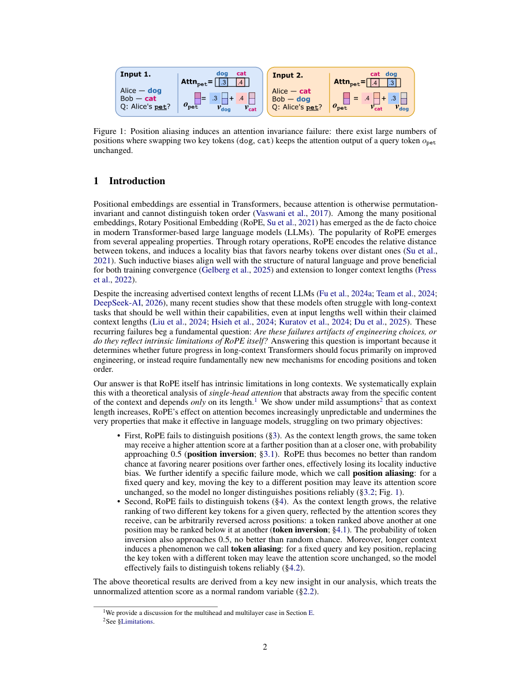

#1
★ 8/10
RoPE Distinguishes Neither Positions Nor Tokens in Long Contexts, Provably
RoPE在长上下文中既无法区分位置也无法区分Token——可证明的局限性

图 Figure · Page 2 of paper
🎯 RoPE在长文本中退化为随机猜测，无法区分位置或Token
RoPE-based attention provably degrades to random chance in long contexts, failing to distinguish positions or tokens.
| 维度 | 中文 | English |
|---|---|---|
| ❓ 待解决 的问题 |
现代大语言模型使用旋转位置编码（RoPE）来告诉模型每个词的位置顺序。但随着文本越来越长，RoPE是否还能可靠地区分"哪些词更近"、"哪些词更重要"，目前缺乏理论保证。本文从理论上研究这一问题：RoPE在长文本下是否真的会失效？失效程度有多严重？ | Modern large language models use Rotary Positional Embeddings (RoPE) to encode the order of tokens in a sequence. As context length grows, it's unclear whether RoPE still reliably tells the model which tokens are nearby and which are relevant. This paper investigates whether RoPE actually breaks down in long contexts, and by how much. |
| 💡 解决 的亮点 |
• 首次从理论上严格证明：随着上下文长度增加，RoPE的局部性偏置和Token相关性一致性均崩溃，失败概率趋近0.5（等同于随机猜测）。 • 证明当Key Token被移动到不同位置或被替换为不同Token时，注意力分数可保持不变——从根本上无法区分位置或Token。 • 揭示增大RoPE base（当前长上下文模型的常见做法）是一种零和权衡：改善了Token区分能力，但必然牺牲位置区分能力，二者无法兼得。 | • Provides the first rigorous theoretical proof that RoPE's locality bias and token relevance consistency both collapse as context length increases, converging to 0.5 (random chance). • Proves that attention scores can remain unchanged when a key token is moved to a different position or replaced by a different token — a fundamental failure to distinguish either positions or tokens. • Shows that increasing the RoPE base (a popular fix in long-context models) trades off token distinguishability against positional distinguishability, and cannot preserve both simultaneously. |
| 🧪 实验 内容 |
作者在标准多头多层Transformer上进行实证实验，检验架构复杂度是否能弥补RoPE的理论缺陷。实验测量了随上下文长度变化时，RoPE正确区分近端与远端Token（局部性偏置）以及跨位置一致性排名同一Token（Token相关性一致性）的概率。同时实验了不同RoPE base值（从标准的10,000到现代长上下文模型使用的500,000+），以观察位置-Token可区分性权衡的实证表现。 | The authors conduct empirical experiments on standard Transformer architectures with multiple attention heads and layers to test whether architectural complexity can compensate for RoPE's theoretical failures. They measure the probability that RoPE correctly distinguishes nearer tokens from farther ones (locality bias) and that it consistently ranks the same token as more relevant across different positions (token relevance consistency), as context length varies. They also experiment with different RoPE base values (e.g., the standard 10,000 up to values used in modern long-context models like 500,000+) to observe the position–token distinguishability trade-off empirically. |
| 📊 实验 结果 |
理论证明并实证确认：随着上下文长度增加，RoPE正确维持局部性偏置和Token相关性一致性的概率均趋向0.5（等同于随机猜测）。当RoPE base从10,000增大到500,000+（如LLaMA等模型的做法）时，Token可区分性提升，但位置可区分性相应下降，二者失败概率呈反向变化。实证测试中，多头多层架构无法克服这些限制，失败率与理论预测高度吻合，与模型深度和宽度无关。 | The probability of RoPE correctly maintaining locality bias and token relevance consistency both converge to 0.5 (equivalent to random guessing) as context length increases — proven analytically and confirmed empirically. When the RoPE base is increased (e.g., from 10,000 to 500,000+ as used in models like LLaMA), token distinguishability improves but positional distinguishability degrades correspondingly, with the two failure probabilities moving in opposite directions. Multi-head and multi-layer architectures did not overcome these limitations in empirical tests — the failure rates closely tracked the theoretical predictions regardless of model depth or width. |
| 🏁 结论 | 本文严格证明了RoPE在长文本中存在根本性缺陷：局部性偏置和Token相关性一致性均退化为随机猜测，且没有任何简单的超参数调整能同时修复这两个问题。研究结果表明，未来的长上下文Transformer可能需要超越RoPE的全新位置编码机制。 | This paper rigorously proves that RoPE-based attention is fundamentally broken in long contexts: both locality bias and token relevance consistency degrade to random chance, and no simple hyperparameter adjustment can fix both simultaneously. The findings suggest that future long-context Transformers may require entirely new positional encoding mechanisms beyond RoPE. |
| 🔗 论文 链接 |
arXiv: 2605.15514v1 · 📥 PDF | |
⚙️ Method · 方法详解
研究团队建立了一套纯理论分析框架，该框架仅依赖于上下文长度，与具体Token内容无关。他们分析了RoPE旋转矩阵的数学结构，证明随着序列变长，Query与Key向量之间的内积因旋转的震荡特性而趋于不可区分。进一步推导出局部性偏置失效和Token相关性一致性失效的概率上界。最后，他们研究了RoPE base超参数对这两类失效的影响，并在多头多层Transformer架构上进行了实证验证。
The authors develop a purely theoretical framework that abstracts away from specific token content and depends only on context length. They analyze the mathematical structure of RoPE-based dot-product attention, proving that as sequence length grows, the inner products between query and key vectors become increasingly indistinguishable due to the oscillatory nature of RoPE's rotation matrices. They then extend this analysis to show the failure of locality bias and token relevance consistency, deriving closed-form probability bounds. Finally, they investigate the effect of the RoPE base hyperparameter on these failure modes and conduct empirical experiments on multi-head, multi-layer Transformer architectures to validate that real models inherit these theoretical limitations.
🌟 Why It Matters · 为什么重要
RoPE是当前几乎所有主流大模型（LLaMA、Mistral、Qwen、GPT-NeoX等）的标配位置编码方案，本文的结论对整整一代长上下文模型提出了根本性质疑。这一工作为长上下文模型在需要精确位置推理的任务上表现不佳提供了理论解释，并为设计全新的位置编码机制提供了重要动机。
RoPE is the de facto positional encoding in virtually all modern LLMs (LLaMA, Mistral, Qwen, GPT-NeoX, etc.), making this a foundational critique of the entire current generation of long-context models. This work provides a theoretical basis for why long-context LLMs struggle on tasks requiring precise positional reasoning, and motivates the search for fundamentally new positional encoding designs.